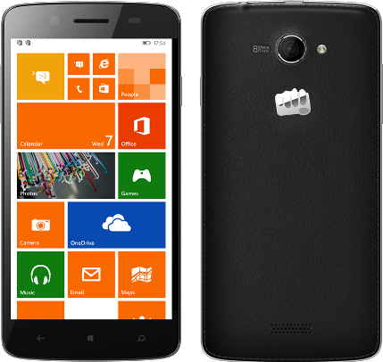

Specifications of Micromax Canvas Xpress 2 (Black & Champagne, 8 GB)
Technical Details
OS Android
RAM 2 GB
Item Weight 136 g
Product Dimensions 14.1 x 0.9 x 7 cm
Item model number E455
Wireless communication technologies Bluetooth, WiFi Hotspot
Connectivity technologies GSM, (850/900/1800/1900 MHz), 3G, WCDMA, (900/2100 MHz), 4G LTE, GPRS, EDGE, WiFi
Special features Video Calls, Dual SIM, GPS, Music Player, Video Player, FM Radio, Light sensor, Proximity sensor, G sensor, eCompass, E-mail, Expandable Memory: 32GB
Form factor Touchscreen Phone
Weight 135 Grams
Colour Black
Battery Power Rating 2500
Whats in the box Handset, Charger and User Manual
Price: Rs. 10,590.00